The background photos on this site come from Wikimedia Commons and are used under the licences listed below. Thank you to the photographers.
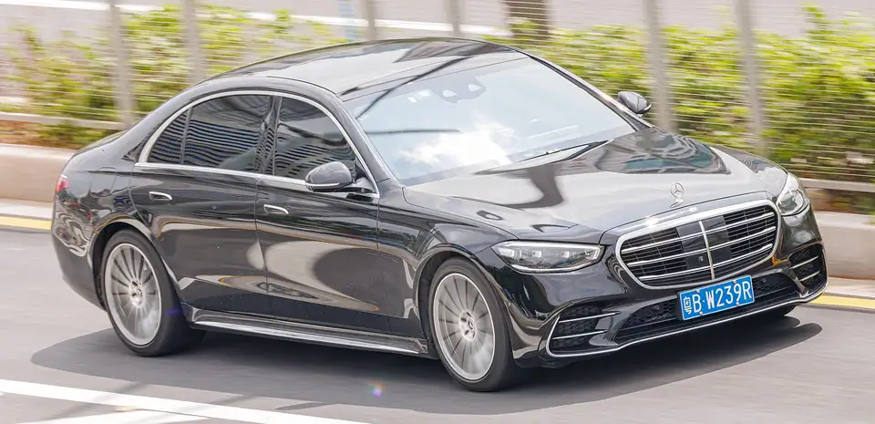
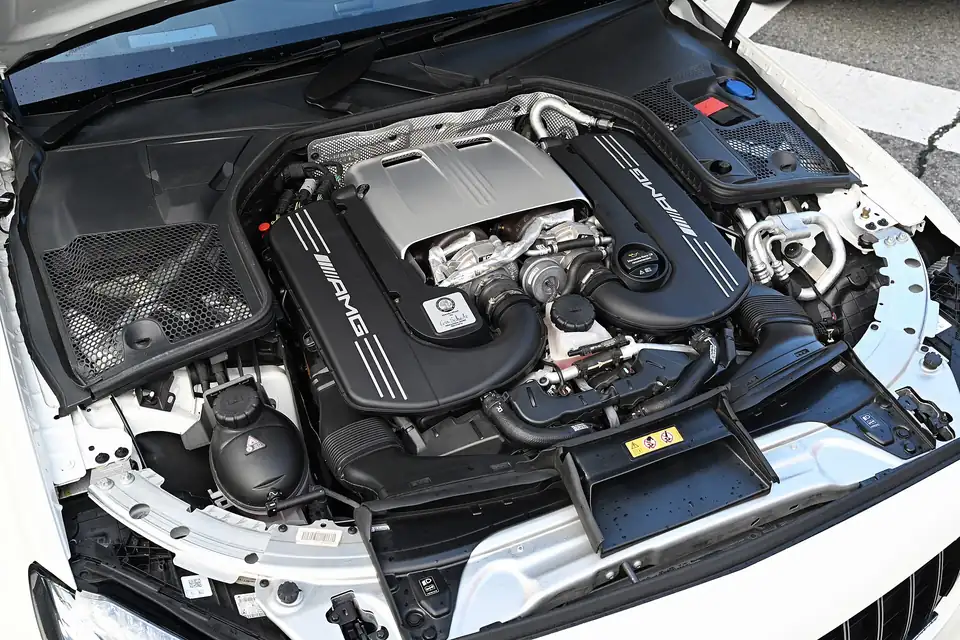
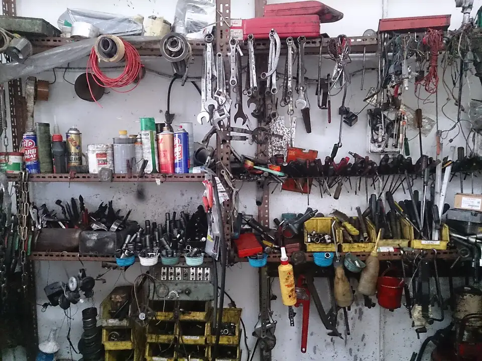
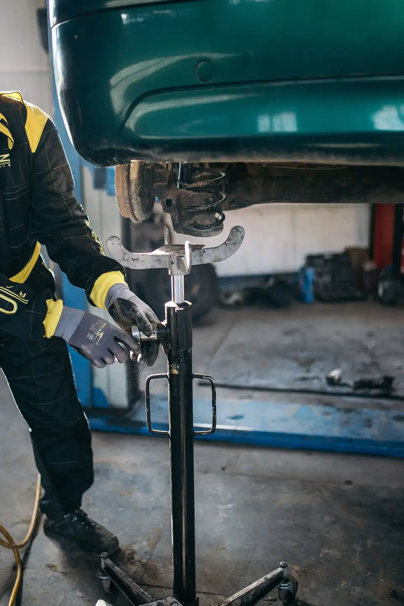
By Shixart1985 · CC BY 2.0 · via Wikimedia Commons
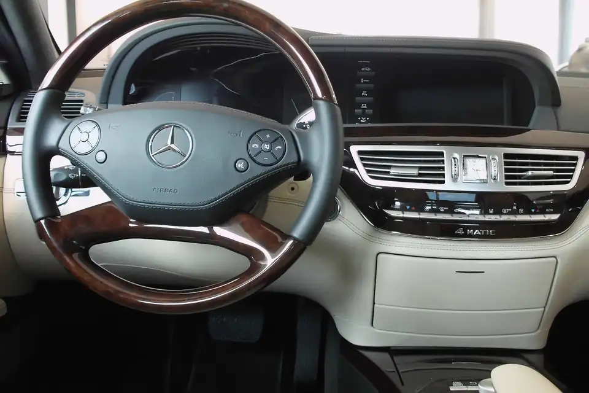
By Onkel Dittmeyer · CC BY-SA 3.0 · via Wikimedia Commons
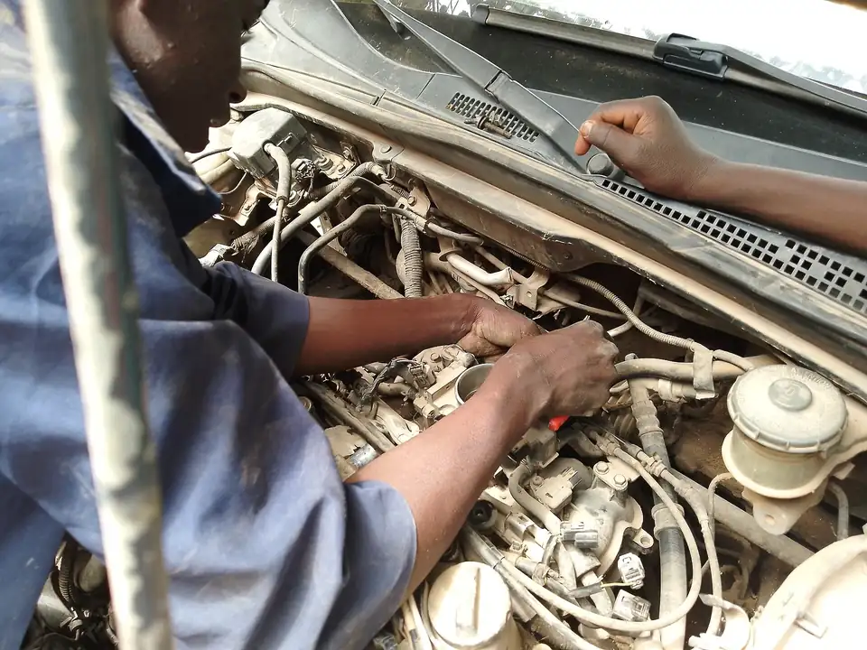
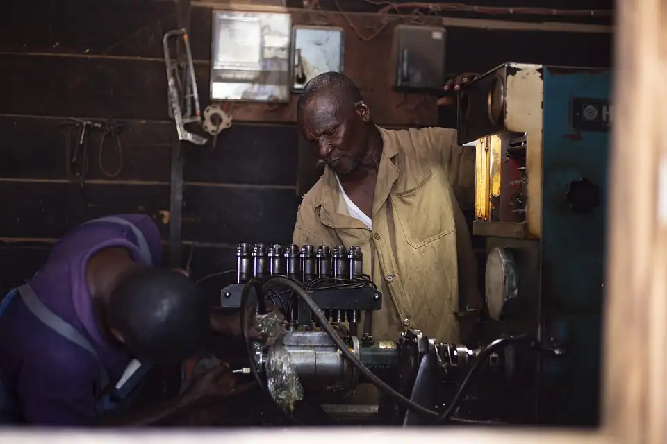
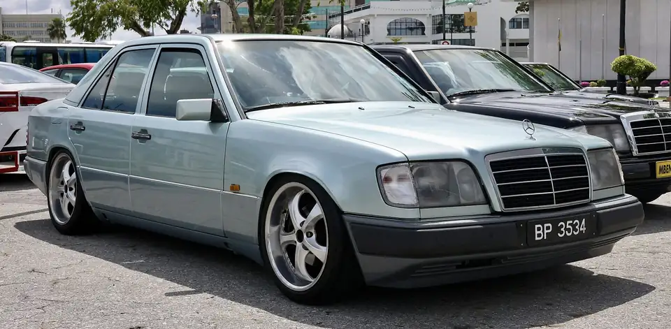
By Chin Yu Chu · CC BY-SA 4.0 · via Wikimedia Commons
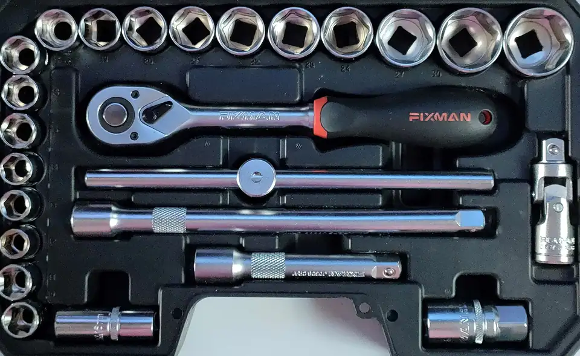
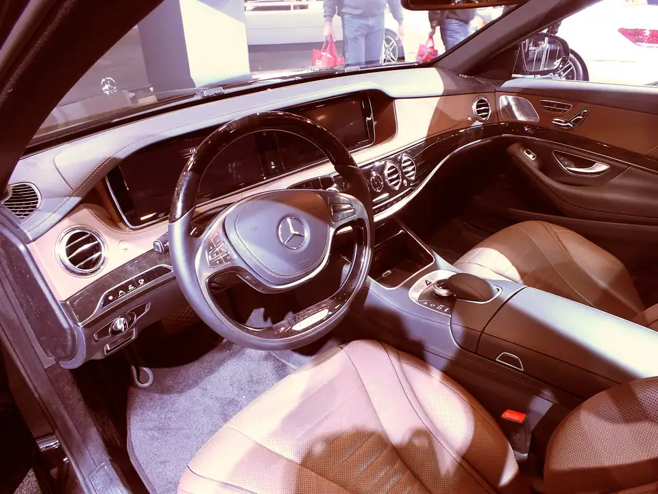
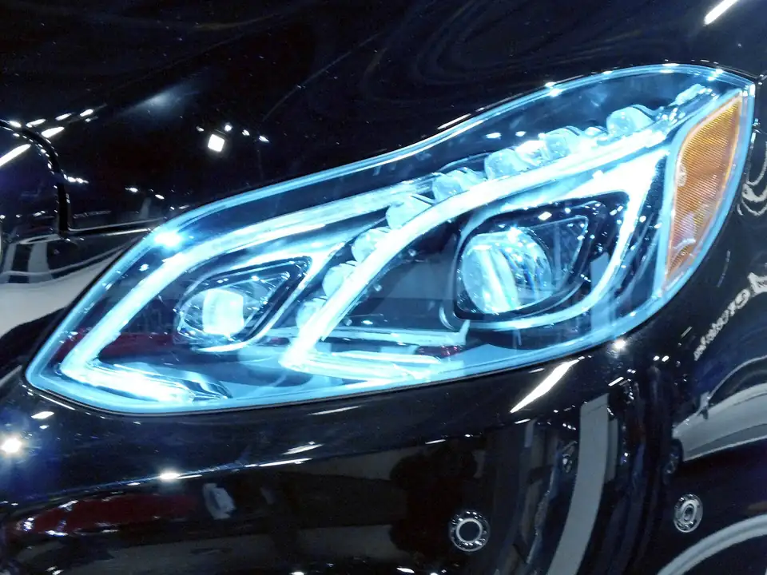
By A. Bailey · CC BY-SA 3.0 · via Wikimedia Commons
Photos have been resized, cropped, darkened and colour-toned for use as backgrounds. Where a licence is CC BY-SA, these adapted versions are shared under the same licence. Mercedes-Benz and related names are trademarks of Mercedes-Benz Group AG. First Class Mercedes is an independent specialist and is not affiliated with Mercedes-Benz.